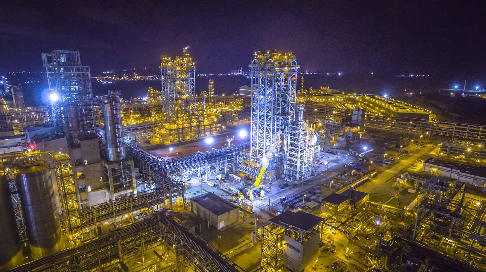
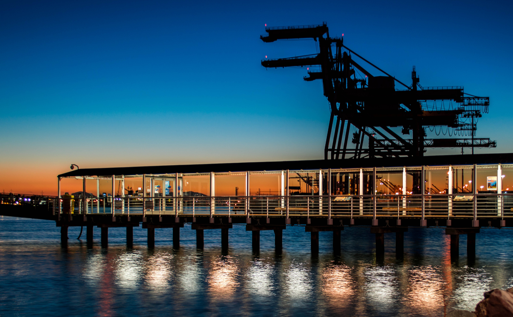
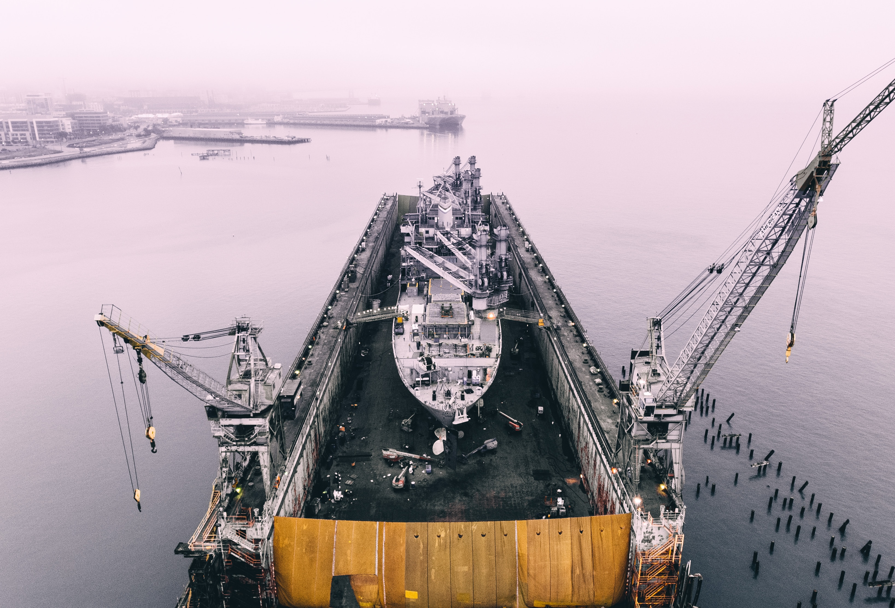
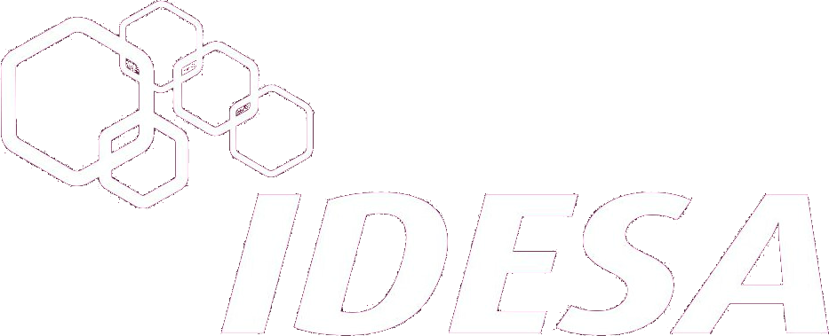

- 1956
- 1963
- 1966
- 1969
- 1972
- 1974
- 1979
- 1981
- 1986
- 1988
- 1995
- 1997
- 2005
- 2006
- 2007
- 2009
- 2010
- 2011
- 2012
- 2013
- 2015
- 2016
- 2020
- 2020
-

1956
Sintesis Organicas
La organización que con el tiempo habría de conocerse como Grupo IDESA, nace en 1956 con la fundación de Síntesis Orgánicas, S.A. (SOSA), y la instalación de una planta de transformación en Tlalnepantla, Estado de México. Esta primera planta tenía una capacidad instalada de 720 toneladas anuales de anhídrido ftálico, que en aquel entonces se derivaba no del petróleo, sino del carbón, utilizando el naftaleno como la materia prima.
-
1963
Sintesis Organicas
Se constituye Industrias Derivadas del Etileno, S.A. de C.V. (IDESA), empresa que posteriormente habría de dar el nombre al Grupo. Este año marca el inicio del surgimiento del primer complejo petroquímico de Grupo IDESA, la Unidad Industrial Puebla.
-

1966
IDESA Puebla
Se funda la tercera empresa: Derivados Maleicos, S.A. de C.V. (DMSA) para producir anhídrido maleico. Este mismo año Síntesis Orgánicas muda sus operaciones productivas a Unidad Industrial Puebla, con dos plantas de anhídrido ftálico con capacidad combinada de producción de 12,000, y otra planta de 15,000 tpa de dioctil ftalato.
-
1969
IDESA Puebla
IDESA comienza la producción de etanolaminas (7,200 tpa), glicoles etilénicos (30,000 tpa) y glicoles propilénicos (10,000 tpa).
-

1972
Derivados Maleicos
Derivados Maleicos arranca su producción de anhídrido maleico con una planta de 7,000 tpa, consolidando lo que fuera la Unidad Industrial Puebla – el complejo se desmanteló y se vendieron sus terrenos en 2018
-
1974
Derivados Maleicos
Inicia otra década de crecimiento con la creación de una nueva compañía, Glicoles Mexicanos, S.A. de C.V. (GLIMEX) – fusionada a Industrias Derivadas del Etileno desde 1999 –, marcando el inicio del surgimiento del segundo complejo petroquímico de Grupo IDESA, la Unidad Industrial Tlaxcala.
-

1979
Glicoles Mexicanos Polidesa
GLIMEX inicia la producción de Etilénglicoles (113,000 tpa) marcando una nueva etapa tecnológica en el Grupo, ya que hasta entonces las empresas del Grupo siempre habían empleado tecnología extranjera, y GLIMEX adaptó e incluso desarrolló tecnología propia. Se pone en marcha Poliestireno y Derivados, S.A. de C.V. (POLIDESA) – fusionada a Novidesa desde 2016 –, compañía resultado de una coinversión con el gobierno federal para la producción de poliestireno cristal e impacto, con capacidad de 20,000 tpa.
-

1981
Holding Grupo IDESA
Se formaliza lo que en muchos aspectos era ya una exitosa realidad, la creación de Grupo IDESA, S.A. de C.V. compañía tenedora de acciones (holding) cuyo propósito consiste en coordinar, consolidar e integrar funciones financieras fiscales y de planeación estratégica de las empresas, así como promover nuevas inversiones.
-

1986
Sintesis Organicas Tlaxcala
Síntesis Orgánicas arranca una nueva planta de anhídrido ftálico con capacidad de 30,000 tpa, consolidando de esta forma la Unidad Industrial Tlaxcala. De esta manera, la capacidad instalada global del Grupo, en once plantas y cinco compañías se elevó a 250,000 tpa. en doce productos petroquímicos diferentes.
-
1988
Sintesis Organicas Tlaxcala
Gracias al talento y experiencia de sus ingenieros, POLIDESA desarrolla tecnología propia e incrementa la capacidad instalada de la planta para llevarla a más del doble de su capacidad original (50,000 tpa).
-
1995
POLIDESA
(Produccion EPS)
POLIDESA decide incursionar en el mercado del poliestireno expansible (EPS) y destina dos de sus reactores para iniciar la producción de EPS.
-
1997
IDESA Coatzacoalcos
La constante modernización tecnológica, y el incremento de competitividad y solidez del Grupo, permitieron que a mediados de la década de los noventa iniciara una nueva etapa de crecimiento con el tercer complejo petroquímico de Grupo IDESA, la Unidad Industrial Coatzacoalcos. En 1997 arranca la planta de Etilénglicoles (220,000 tpa) y la de Etanolaminas (20,000 tpa).
-

2005
NOVIDESA
Grupo IDESA inicia su cuarta etapa de crecimiento, caracterizada por la diversificación a través de asociaciones estratégicas y adquisición de negocios. Como resultado de una alianza con la empresa canadiense NOVA Chemicals, se crea la empresa NOVIDESA, S.A. de C.V., empresa dedicada a la elaboración de Sistemas de Construcción fabricados a base de poliestireno expansible (EPS) con sede en la Unidad Industrial Tlaxcala.
-
2006
Centro De Desarrollo Tecnologico
La vocación innovadora que ha caracterizado a Grupo IDESA desde sus inicios, da origen al Centro de Desarrollo Tecnológico IDESA, S.A. de C.V. (CDTI), cuyo objetivo es ser la plataforma tecnológica de los negocios del Grupo.
-
2007
ALVI EXELLENCE FREIGHTS
Se adquiere Negociación ALVI, S.A. de C.V. empresa distribuidora de productos químicos, junto con su empresa de transporte Excellence Freights de México, S.A. de C.V.
-
2009
ALVI EXELLENCE FREIGHTS
Se adquieren las empresas Egon Meyer, S.A. de C.V., empresa distribuidora de productos químicos; Pinturas Atlas Marlux, S.A. de C.V., empresa fabricante y comercializadora de pintura arquitectónica; Cosmográfica S.A. de C.V., empresa fabricante de tintas para impresión; y Cosmonail S.A. de C.V., empresa fabricante de esmalte para uñas.
-
2010
EGON MAYER BRASKEN IDESA
Nace Braskem IDESA, S.A.P.I., resultado de la alianza entre Grupo IDESA (25% de la participación) y la empresa petroquímica brasileña, Braskem (75% de la participación). El objetivo de esta alianza estratégica fue desarrollar el proyecto Etileno XXI, siendo el proyecto petroquímico más grande de América Latina y el más grande construido en México en los últimos 30 años. El complejo petroquímico fue diseñado para producir 1 millón de toneladas polietileno en Nanchital, Veracruz.
-
2011
ALVEG Petramin
Se crea la empresa ALVEG Distribución Química, S.A. de C.V. como resultado de la fusión de las empresas Negociación ALVI y Egon Meyer. Siendo hoy en día la empresa número uno en la distribución de productos químicos en México. Se adquiere la empresa Petramin, S.A. de C.V., empresa localizada en Irapuato y dedicada a la producción de alquilaminas. Esta empresa da paso a la creación de la Unidad Industrial Irapuato. Se crea la empresa Excellence Sea & Land Logistics, S.A. de C.V., derivado de la adquisición de los derechos de una concesión de una terminal marítima de almacenamiento de fluidos en el Puerto de Veracruz.
-
2013
CYPLUS IDESA
Se constituye CyPlus IDESA, S.A.P.I. de C.V. Grupo IDESA firma una alianza estratégica con CyPlus GmbH (empresa 100% subsidiaria de Evonik Industries AG) para la construcción de una planta de cianuro de sodio en la Unidad Industrial Coatzacoalcos.
-
2015
CYPLUS IDESA
En sociedad con la canadiense International Frontier Resources (IFR), Grupo IDESA crea Tonalli Energía, S.A.P.I. de C.V., empresa del sector de hidrocarburos para la exploración y explotación de campos petroleros.
-
2016
TONALLI ENERGIA
El complejo petroquímico de Braskem IDESA arranca su producción de polietileno. CyPlus IDESA arranca su producción de cianuro de sodio con una planta de 40,000 tpa.
-
2020
Ampliación Terminal ESLL
Texto, texto, texto, texto, texto, texto,Texto, texto, texto, texto, texto, texto,Texto, texto, texto, texto, texto, textoTexto, texto, texto, texto, texto, textoTexto, texto, texto, texto, texto, textoTexto, texto, texto, texto, texto, texto.
+
-